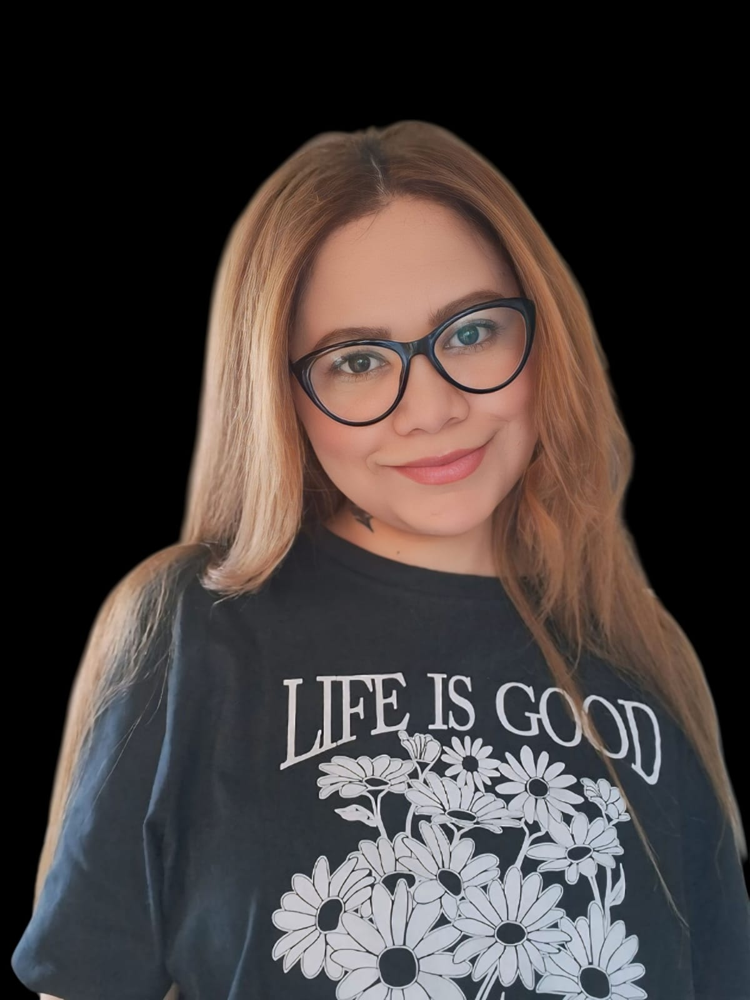

Tenho 33 anos, sou solteira, sem filhos, moro na Vila Progresso em Campo Grande, MS
Sou Administradora Especialista em Gestão Estratégica de Pessoas e em Business Intelligence (BI)
Atualmente sou graduanda em Ciência de Dados na UFMS e trabalho como Analista de Dados na Hering
Tenho interesse em artesanatos, tecnologias e animais_especialmente gatos